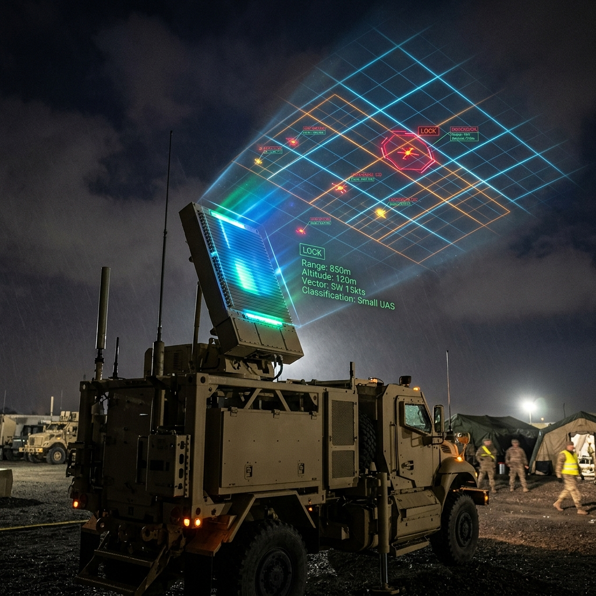
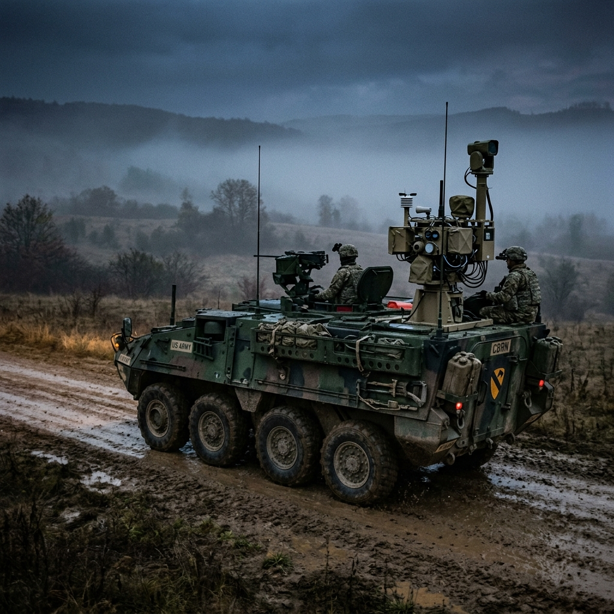
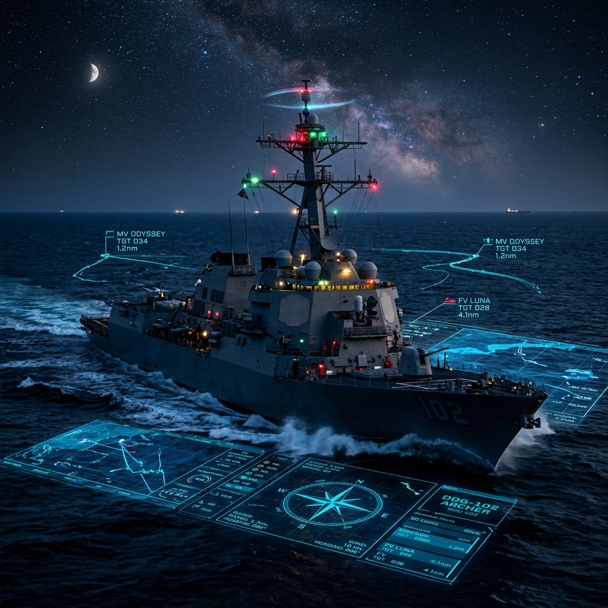

Airports, energy sites, rail, and ports across Europe face repeated drone incursions and most capable defenses are foreign, unaffordable for civilians, or both.
Munich Airport suspended operations after drone incursions. Civilian airspace is now a front line.
Airports, energy sites, rail, and ports across Europe face repeated incursions.
Most capable CUAS systems are US or Israeli origin, creating strategic dependency.
Every DE ORB node carries multiple passive sensors. Their overlapping coverage streams to one fusion brain that classifies, tracks, and cues the response.
Patent filing ongoing on the fusion architecture. Proof-of-concept underway.
Cross-sensor fusion cuts false alarms by 10×, combining per-sensor confidence via Bayesian log-odds and a Kalman-filter tracker that survives RF-cutoff events.
Same screen, same training — add nodes to scale coverage from a single building to an entire district without re-procuring a system.
Passive detection today; a directed-energy laser effector in Phase 2. The cost exchange kinetic defense could never sustain, finally works.
Every asset becomes defensible — existing cameras, radar, and RF gear feed straight into the fusion engine alongside DE ORB's own hardware.
One low-cost node per asset, overlapping coverage that compounds — instead of one costly system with blind spots.

Overlapping node coverage across runways, fences, and terminals — one fused picture, no blind spots.

Passive, zero-emission nodes that reuse existing rooftops and fencing — no new spectrum footprint to defend.

Vehicle or backpack-deployed nodes stand up coverage in 30 minutes for temporary, high-footfall perimeters.
The threat is documented. The gap is real. The team is assembled. We're looking for investors, partners, and pilot sites who understand the urgency.